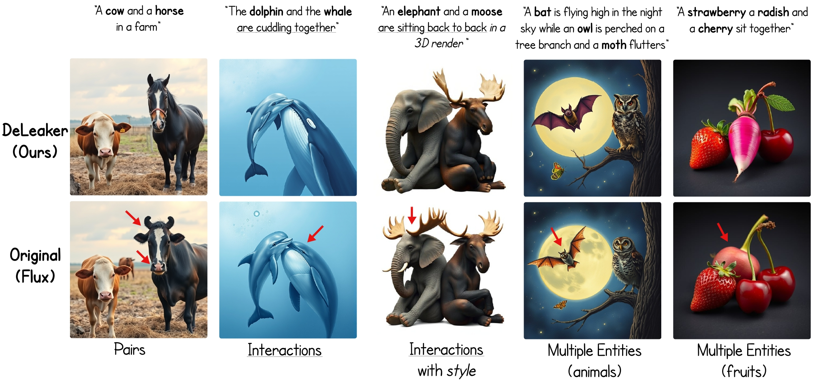
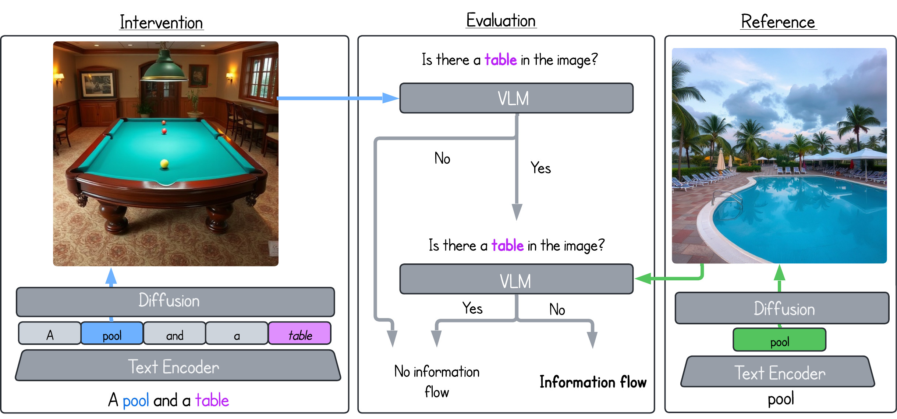
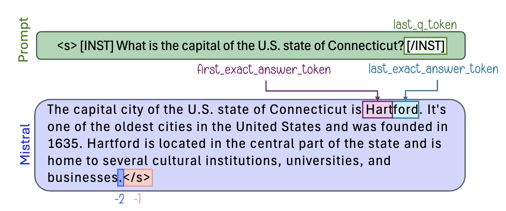
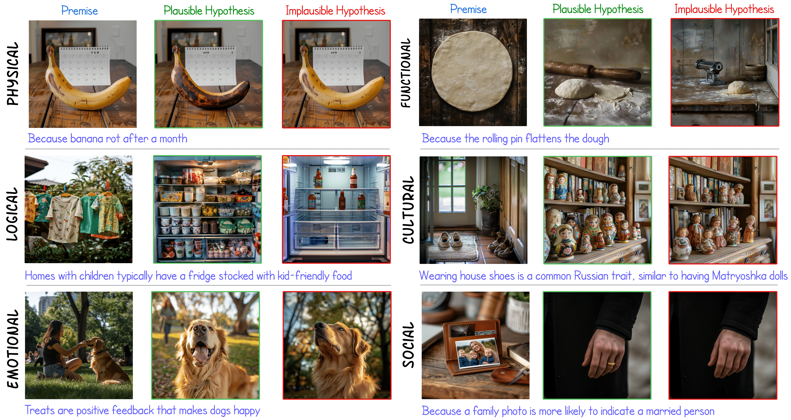
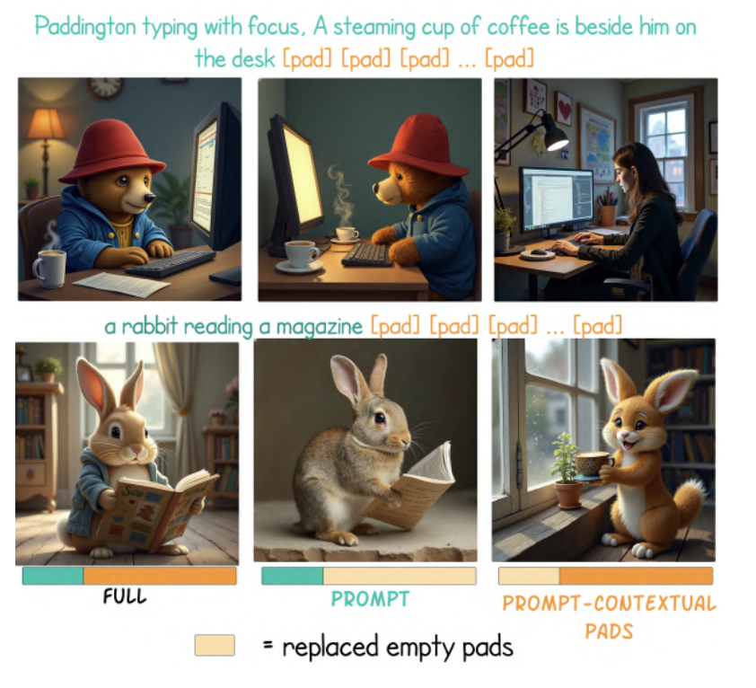

|
Michael Toker Hey there, I'm Michael, a PhD student under the supervision of Yonatan Belinkov at The NLP Research Lab at the CS faculty Technion, I am an Azrieli Fellow. I am starting a position as a Research Intern at Google Research in Tel Aviv, where I will work with Gal Yona, and last year I completed an internship in Nvidia's AI group in Tel Aviv under the supervision of Gal Chechik, where I worked with Rinon Gal and Yoad Tewel. My research focuses on explainability in multi-modal models, where I aim to gain a better understanding of how information is encoded and how calculations are made in text-to-image models, large language models, and vision-language models. |

|
TED Talk |
Recent Publications |
|
 |
DeLeaker: Dynamic Inference-Time Reweighting For Semantic Leakage Mitigation in Text-to-Image Models
Michael Toker*, Mor Ventura*, Or Patashnik, Yonatan Belinkov, Roi Reichart ICLR, 2026 Poster / arXiv / BibTeX @inproceedings{ventura2025deleaker,
title={Deleaker: Dynamic inference-time reweighting for semantic leakage mitigation in text-to-image models},
author={Ventura, Mor and Toker, Michael and Patashnik, Or and Belinkov, Yonatan and Reichart, Roi},
booktitle={The Fourteenth International Conference on Learning Representations},
year={2026}
}
Text-to-Image (T2I) models remain vulnerable to semantic leakage, where features from one entity unintendedly transfer to another. We introduce DeLeaker, an optimization-free inference-time approach that mitigates this by dynamically reweighting attention maps to suppress excessive cross-entity interactions, achieving effective mitigation without compromising fidelity. |
|
 |
Follow the Flow: On Information Flow Across Textual Tokens in Text-to-Image Models
Michael Toker*, Guy Kaplan*, Yuval Reif, Yonatan Belinkov, Roy Schwartz ACL, 2026 arXiv We investigate how semantic information is distributed across token representations in T2I models. Using patching techniques, we find that information often concentrates in single tokens within a lexical item and that items usually remain isolated. However, we also identify cases of cross-item influence that can lead to misinterpretations and misalignment. |
|
 |
LLMs Know More Than They Show: On the Intrinsic Representation of LLM Hallucinations
Hadas Orgad, Michael Toker, Zorik Gekhman, Roi Reichart, Idan Szpektor, Hadas Kotek, Yonatan Belinkov ICLR, 2025 Proceedings / arXiv We demonstrate that LLMs' internal representations encode much richer information about truthfulness than previously recognized, often concentrated in specific tokens. We reveal a mismatch between what models know and what they say, showing that internal states can predict error types and detect hallucinations even when the generated output is incorrect. |
|
 |
NL-Eye: Abductive NLI for Images
Mor Ventura, Michael Toker, Nitay Calderon, Zorik Gekhman, Yonatan Bitton, Roi Reichart ICLR, 2025 Proceedings / arXiv We introduce NL-Eye, a benchmark for assessing visual abductive reasoning in VLMs—the ability to infer probable causes or outcomes from visual scenes. Our experiments show that while humans excel at this task, current VLMs struggle significantly, often performing at random baseline levels. |
|
 |
Padding Tone: A Mechanistic Analysis of Padding Tokens in T2I Models
Michael Toker, Ido Galil, Hadas Orgad, Rinon Gal, Yoad Tewel, Gal Chechik, Yonatan Belinkov NAACL, 2025 Proceedings / arXiv / Talk We conduct an in-depth analysis of padding tokens in T2I models. We find that despite being intended as empty fillers, these tokens often influence the generation process. We identify three scenarios: they can be ignored, used during text encoding (if the encoder is trained), or act as "registers" in the diffusion process even when not encoded. |

|
Diffusion Lens: Interpreting Text Encoders in Text-to-Image Pipelines
Michael Toker, Hadas Orgad, Mor Ventura, Dana Arad, Yonatan Belinkov, ACL, 2024 Project Page / Proceedings / Talk / NNsight Tutorial / arXiv Text-to-image diffusion models (T2I) use a latent representation of a text prompt to guide the image generation process. However, the process by which the encoder produces the text representation is unknown. We propose the Diffusion Lens, a method for analyzing the text encoder of T2I models by generating images from its intermediate representations. Using the Diffusion Lens, we perform an extensive analysis of two recent T2I models. Exploring compound prompts, we find that complex scenes describing multiple objects are composed progressively and more slowly compared to simple scenes; Exploring knowledge retrieval, we find that representation of uncommon concepts requires further computation compared to common concepts, and that knowledge retrieval is gradual across layers. Overall, our findings provide valuable insights into the text encoder component in T2I pipelines. |

|
A Dataset for Metaphor Detection in Early Medieval Hebrew Poetry
Michael Toker, Oren Mishali, Ophir Münz-Manor, Benny Kimelfeld, Yonatan Belinkov, EACL, 2024 Project Page / Paper There is a large volume of late antique and medieval Hebrew texts. They represent a crucial linguistic and cultural bridge between Biblical and modern Hebrew. Poetry is prominent in these texts and one of its main characteristics is the frequent use of metaphor. Distinguishing figurative and literal language use is a major task for scholars of the Humanities, especially in the fields of literature, linguistics, and hermeneutics. This paper presents a new, challenging dataset of late antique and medieval Hebrew poetry with expert annotations of metaphor, as well as some baseline results, which we hope will facilitate further research in this area. |
Recent TalksPadding Tone: A Mechanistic Analysis of Padding Tokens in T2I ModelsNLP IL - Vision-Language Club #6
|
|
Feel free to steal this website's source code. Do not scrape the HTML from this page itself, as it includes analytics tags that you do not want on your own website — use the github code instead. Also, consider using Leonid Keselman's Jekyll fork of this page. |